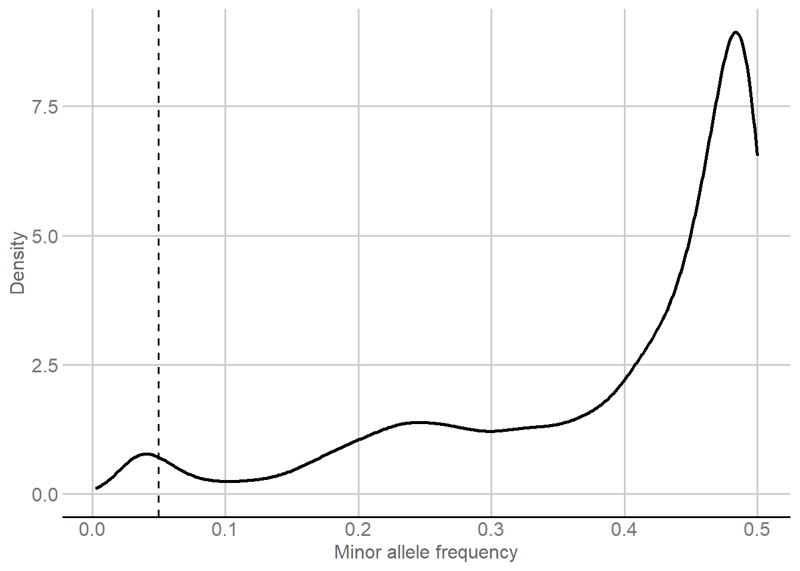

Last updated: 2026-11-12
Checks: 6 1
Knit directory:
Genomic-Prediction-using-Regularized-Artificial-Neural-Networks/
This reproducible R Markdown analysis was created with workflowr (version 1.7.2). The Checks tab describes the reproducibility checks that were applied when the results were created. The Past versions tab lists the development history.
The R Markdown is untracked by Git. To know which version of the R
Markdown file created these results, you’ll want to first commit it to
the Git repo. If you’re still working on the analysis, you can ignore
this warning. When you’re finished, you can run
wflow_publish to commit the R Markdown file and build the
HTML.
Great job! The global environment was empty. Objects defined in the global environment can affect the analysis in your R Markdown file in unknown ways. For reproduciblity it’s best to always run the code in an empty environment.
The command set.seed(20260821) was run prior to running
the code in the R Markdown file. Setting a seed ensures that any results
that rely on randomness, e.g. subsampling or permutations, are
reproducible.
Great job! Recording the operating system, R version, and package versions is critical for reproducibility.
Nice! There were no cached chunks for this analysis, so you can be confident that you successfully produced the results during this run.
Great job! Using relative paths to the files within your workflowr project makes it easier to run your code on other machines.
Great! You are using Git for version control. Tracking code development and connecting the code version to the results is critical for reproducibility.
The results in this page were generated with repository version 2d6683a. See the Past versions tab to see a history of the changes made to the R Markdown and HTML files.
Note that you need to be careful to ensure that all relevant files for
the analysis have been committed to Git prior to generating the results
(you can use wflow_publish or
wflow_git_commit). workflowr only checks the R Markdown
file, but you know if there are other scripts or data files that it
depends on. Below is the status of the Git repository when the results
were generated:
Ignored files:
Ignored: .Rhistory
Ignored: .Rproj.user/
Ignored: .github/
Ignored: .local/
Ignored: data/dados_reais/geno_real.rds
Ignored: renv/library/
Ignored: renv/staging/
Untracked files:
Untracked: analysis/real_data_audit.Rmd
Untracked: create_real_data_audit.py
Note that any generated files, e.g. HTML, png, CSS, etc., are not included in this status report because it is ok for generated content to have uncommitted changes.
These are the previous versions of the repository in which changes were
made to the R Markdown (analysis/real_data_audit.Rmd) and
HTML (docs/real_data_audit.html) files. If you’ve
configured a remote Git repository (see ?wflow_git_remote),
click on the hyperlinks in the table below to view the files as they
were in that past version.
| File | Version | Author | Date | Message |
|---|---|---|---|---|
| Rmd | a6a1d2f | WevertonGomesCosta | 2026-11-12 | Remove obsolete real-data workflow and diagnostics |
| html | a6a1d2f | WevertonGomesCosta | 2026-11-12 | Remove obsolete real-data workflow and diagnostics |
| html | cdbac19 | WevertonGomesCosta | 2026-11-09 | Build real-data workflowr pages |
| Rmd | 4fa5d7c | WevertonGomesCosta | 2026-11-05 | Add audited real-data workflow through GBLUP-ADE |
This module prepares the real Coffea arabica genomic data used throughout the prediction workflow. The population contains 195 individuals derived from crosses involving the Catuaí group and Timor Hybrid germplasm. Genotyping was performed by Capture-Seq, producing the SNP panel used as the genomic input.
The module has four goals:
No genomic prediction model is fitted here. All downstream methods receive the same individuals, phenotypic targets, and retained marker panel.
Three packages support the reader-facing analysis:
knitr formats data summaries as HTML
tables;ggplot2 constructs the marker-quality
figure;ggthemes provides
theme_gdocs() and matching color scales.library(knitr)
library(ggplot2)
library(ggthemes)The marker-quality criteria are fixed before preprocessing:
CALL_RATE_MIN <- 0.90
MAF_MIN <- 0.05The genomic input contains individuals in rows and SNPs in columns.
The phenotypic input contains the individual BLUPs obtained from the
longitudinal mixed-model analysis for cercosporiosis (Cer),
leaf-miner incidence (BM), and the production-related trait
(LP).
geno_raw <- readRDS(
"data/dados_reais/geno_real.rds"
)
blups <- readRDS(
"output/real/phenotype/real_phenotype_blups.rds"
)
G_raw <- as.matrix(geno_raw)
input_summary <- data.frame(
Input = c(
"Capture-Seq genotype panel",
"Individual BLUPs"
),
Individuals = c(
nrow(G_raw),
nrow(blups)
),
Variables = c(
ncol(G_raw),
3L
),
Description = c(
"Raw SNP markers",
"Cer, BM, and LP"
),
stringsAsFactors = FALSE
)
input_summary |>
knitr::kable(
format = "html",
caption = "Real-data inputs used in the genomic-prediction workflow",
row.names = FALSE,
table.attr = 'class="table table-striped table-hover table-bordered" style="width:100%;"'
)| Input | Individuals | Variables | Description |
|---|---|---|---|
| Capture-Seq genotype panel | 195 | 21620 | Raw SNP markers |
| Individual BLUPs | 195 | 3 | Cer, BM, and LP |
Capture-Seq produced 21,620 SNPs for the 195 genotyped individuals. The phenotype module supplies one BLUP for each of these individuals and each of the three prediction traits.
The genomic rows use labels of the form PROG 1_1, where
the first number identifies the progeny and the second identifies the
plant within that progeny. The phenotype object stores these two
components separately as Progenie and
Planta.
A genomic identifier is therefore constructed directly from those fields and used to match each BLUP with its genomic profile.
blups$Genotype_ID <- paste0(
"PROG ",
blups$Progenie,
"_",
blups$Planta
)
genotype_match <- match(
blups$Genotype_ID,
rownames(G_raw)
)
alignment_summary <- data.frame(
Check = c(
"Phenotypic individuals",
"Genotypic individuals",
"Unique phenotypic genomic IDs",
"Unique genomic row IDs",
"Phenotypes without genotype",
"Genotypes without phenotype",
"One-to-one matches"
),
Value = c(
nrow(blups),
nrow(G_raw),
length(unique(blups$Genotype_ID)),
length(unique(rownames(G_raw))),
sum(!blups$Genotype_ID %in% rownames(G_raw)),
sum(!rownames(G_raw) %in% blups$Genotype_ID),
sum(!is.na(genotype_match))
),
stringsAsFactors = FALSE
)
alignment_summary |>
knitr::kable(
format = "html",
caption = "Individual alignment between phenotype and genotype data",
row.names = FALSE,
table.attr = 'class="table table-striped table-hover table-bordered" style="width:100%;"'
)| Check | Value |
|---|---|
| Phenotypic individuals | 195 |
| Genotypic individuals | 195 |
| Unique phenotypic genomic IDs | 195 |
| Unique genomic row IDs | 195 |
| Phenotypes without genotype | 0 |
| Genotypes without phenotype | 0 |
| One-to-one matches | 195 |
stopifnot(
nrow(blups) == 195L,
nrow(G_raw) == 195L,
length(unique(blups$Genotype_ID)) == 195L,
length(unique(rownames(G_raw))) == 195L,
!anyNA(genotype_match),
length(unique(genotype_match)) == 195L,
setequal(blups$Genotype_ID, rownames(G_raw))
)
G <- G_raw[
genotype_match,
,
drop = FALSE
]
stopifnot(
identical(
rownames(G),
blups$Genotype_ID
)
)
individuals <- data.frame(
Phenotype_ID = blups$Phenotype_ID,
Genotype_ID = blups$Genotype_ID,
ID_Planta = blups$ID_Planta,
Progenie = blups$Progenie,
Planta = blups$Planta,
Populacao = blups$Populacao,
stringsAsFactors = FALSE
)
rownames(G) <- individuals$Phenotype_IDThe common genomic matrix is now ordered exactly as the phenotype
table. The stable Phenotype_ID is used as the row name
passed to all downstream modules.
The 195 individuals belong to 13 progenies, with 15 plants in each progeny.
family <- paste0(
"PROG ",
individuals$Progenie
)
family_size <- sort(
table(family)
)
family_table <- data.frame(
Progeny = names(family_size),
Individuals = as.integer(family_size),
stringsAsFactors = FALSE
)
family_table |>
knitr::kable(
format = "html",
caption = "Number of genotyped individuals per progeny",
row.names = FALSE,
table.attr = 'class="table table-striped table-hover table-bordered" style="width:100%;"'
)| Progeny | Individuals |
|---|---|
| PROG 1 | 15 |
| PROG 10 | 15 |
| PROG 11 | 15 |
| PROG 12 | 15 |
| PROG 13 | 15 |
| PROG 2 | 15 |
| PROG 3 | 15 |
| PROG 4 | 15 |
| PROG 5 | 15 |
| PROG 6 | 15 |
| PROG 7 | 15 |
| PROG 8 | 15 |
| PROG 9 | 15 |
stopifnot(
length(family_size) == 13L,
all(family_size == 15L)
)The three BLUP traits are summarized on the same 195-individual set.
traits <- c(
"Cer",
"BM",
"LP"
)
trait_summary <- data.frame(
Trait = character(0),
N = integer(0),
Missing = integer(0),
Mean = numeric(0),
SD = numeric(0),
Min = numeric(0),
Median = numeric(0),
Max = numeric(0),
stringsAsFactors = FALSE
)
for (trait in traits) {
x <- blups[[trait]]
trait_summary <- rbind(
trait_summary,
data.frame(
Trait = trait,
N = sum(!is.na(x)),
Missing = sum(is.na(x)),
Mean = mean(x, na.rm = TRUE),
SD = sd(x, na.rm = TRUE),
Min = min(x, na.rm = TRUE),
Median = median(x, na.rm = TRUE),
Max = max(x, na.rm = TRUE),
stringsAsFactors = FALSE
)
)
}
trait_summary |>
knitr::kable(
format = "html",
digits = 4,
caption = "Summary of individual BLUPs used as prediction targets",
row.names = FALSE,
table.attr = 'class="table table-striped table-hover table-bordered" style="width:100%;"'
)| Trait | N | Missing | Mean | SD | Min | Median | Max |
|---|---|---|---|---|---|---|---|
| Cer | 195 | 0 | 2.4880 | 0.2080 | 1.9774 | 2.4839 | 2.9494 |
| BM | 195 | 0 | 2.0256 | 0.1511 | 1.6521 | 2.0536 | 2.3399 |
| LP | 195 | 0 | 5.1364 | 1.2574 | 2.1860 | 5.0030 | 9.0859 |
stopifnot(
all(traits %in% names(blups)),
all(trait_summary$N == 195L),
all(trait_summary$Missing == 0L)
)The SNP matrix uses the discrete coding -1,
0, and 1. For allele-frequency calculations,
these values are converted to dosages 0, 1,
and 2 by adding one. The original -1/0/1
coding is retained in the matrix used by the prediction models.
observed_codes <- sort(
unique(
as.numeric(G)
)
)
genotype_summary <- data.frame(
Statistic = c(
"Individuals",
"Raw SNPs",
"Observed genotype codes",
"Missing genotype cells",
"Duplicated individual IDs",
"Duplicated marker IDs"
),
Value = c(
as.character(nrow(G)),
as.character(ncol(G)),
paste(observed_codes, collapse = ", "),
as.character(sum(is.na(G))),
as.character(sum(duplicated(rownames(G)))),
as.character(sum(duplicated(colnames(G))))
),
stringsAsFactors = FALSE
)
genotype_summary |>
knitr::kable(
format = "html",
caption = "Structure of the Capture-Seq genotype matrix",
row.names = FALSE,
table.attr = 'class="table table-striped table-hover table-bordered" style="width:100%;"'
)| Statistic | Value |
|---|---|
| Individuals | 195 |
| Raw SNPs | 21620 |
| Observed genotype codes | -1, 0, 1 |
| Missing genotype cells | 0 |
| Duplicated individual IDs | 0 |
| Duplicated marker IDs | 0 |
stopifnot(
identical(
observed_codes,
c(-1, 0, 1)
),
!anyDuplicated(rownames(G)),
!anyDuplicated(colnames(G))
)Three criteria are applied to every SNP before model fitting:
The same retained marker panel is used by all genomic-prediction methods.
call_rate <- colMeans(
!is.na(G)
)
dosage <- G + 1
allele_frequency <- colMeans(
dosage,
na.rm = TRUE
) / 2
maf <- pmin(
allele_frequency,
1 - allele_frequency
)
observed_heterozygosity <- colMeans(
G == 0,
na.rm = TRUE
)
marker_variance <- apply(
G,
2,
var,
na.rm = TRUE
)
pass_call_rate <- call_rate >= CALL_RATE_MIN
pass_maf <- maf >= MAF_MIN
pass_heterozygosity <- observed_heterozygosity < 1
keep_marker <- (
pass_call_rate &
pass_maf &
pass_heterozygosity
)
marker_qc <- data.frame(
Marker = colnames(G),
Call_Rate = call_rate,
Allele_Frequency = allele_frequency,
MAF = maf,
Observed_Heterozygosity = observed_heterozygosity,
Variance = marker_variance,
Pass_Call_Rate = pass_call_rate,
Pass_MAF = pass_maf,
Pass_Heterozygosity = pass_heterozygosity,
Keep = keep_marker,
stringsAsFactors = FALSE
)
qc_summary <- data.frame(
Criterion = c(
"Raw SNPs",
"Call rate < 0.90",
"MAF < 0.05",
"100% observed heterozygosity",
"Total SNPs removed",
"SNPs retained"
),
Markers = c(
ncol(G),
sum(!pass_call_rate),
sum(!pass_maf),
sum(!pass_heterozygosity),
sum(!keep_marker),
sum(keep_marker)
),
stringsAsFactors = FALSE
)
qc_summary |>
knitr::kable(
format = "html",
caption = "Marker quality-control summary",
row.names = FALSE,
table.attr = 'class="table table-striped table-hover table-bordered" style="width:100%;"'
)| Criterion | Markers |
|---|---|
| Raw SNPs | 21620 |
| Call rate < 0.90 | 0 |
| MAF < 0.05 | 611 |
| 100% observed heterozygosity | 122 |
| Total SNPs removed | 733 |
| SNPs retained | 20887 |
The retained panel contains 20,887 SNPs from the 21,620 raw Capture-Seq markers.
The MAF distribution summarizes allele-frequency balance across the raw marker panel. The vertical line indicates the minimum MAF retained for prediction.
maf_plot_data <- data.frame(
MAF = maf,
stringsAsFactors = FALSE
)
p_maf <- ggplot(
maf_plot_data,
aes(
x = MAF
)
) +
geom_density(
alpha = 0.28,
linewidth = 0.9
) +
geom_vline(
xintercept = MAF_MIN,
linetype = "dashed",
linewidth = 0.7
) +
labs(
x = "Minor allele frequency",
y = "Density"
) +
theme_gdocs()
print(p_maf)
Minor allele frequency distribution across the raw Capture-Seq SNP panel. The dashed line indicates the MAF threshold used for marker retention.
The quality-control rules are applied once to create the marker matrix shared by all downstream prediction methods.
G_qc <- G[
,
keep_marker,
drop = FALSE
]
retained_call_rate <- call_rate[
keep_marker
]
retained_maf <- maf[
keep_marker
]
retained_heterozygosity <- observed_heterozygosity[
keep_marker
]
retained_variance <- marker_variance[
keep_marker
]
marker_contract <- data.frame(
Property = c(
"Individuals",
"Retained SNPs",
"Minimum call rate",
"Minimum MAF",
"Maximum observed heterozygosity",
"Minimum marker variance"
),
Value = c(
nrow(G_qc),
ncol(G_qc),
min(retained_call_rate),
min(retained_maf),
max(retained_heterozygosity),
min(retained_variance)
),
stringsAsFactors = FALSE
)
marker_contract |>
knitr::kable(
format = "html",
digits = 4,
caption = "Common genomic marker panel after quality control",
row.names = FALSE,
table.attr = 'class="table table-striped table-hover table-bordered" style="width:100%;"'
)| Property | Value |
|---|---|
| Individuals | 195.0000 |
| Retained SNPs | 20887.0000 |
| Minimum call rate | 1.0000 |
| Minimum MAF | 0.0513 |
| Maximum observed heterozygosity | 0.9949 |
| Minimum marker variance | 0.0051 |
stopifnot(
nrow(G_qc) == 195L,
all(retained_call_rate >= CALL_RATE_MIN),
all(retained_maf >= MAF_MIN),
all(retained_heterozygosity < 1),
all(retained_variance > 0),
!anyDuplicated(colnames(G_qc))
)The final genomic matrix therefore contains 195 individuals and
20,887 SNPs. The -1/0/1 genotype coding and the SNP column
order are preserved.
The real-data workflow proceeds with one common dataset:
Cer, BM, and
LP;-1/0/1;The next module defines the common validation design before GBLUP-ADE and ANN are fitted.
sessionInfo()R version 4.5.1 (2025-06-13 ucrt)
Platform: x86_64-w64-mingw32/x64
Running under: Windows 11 x64 (build 26300)
Matrix products: default
LAPACK version 3.12.1
locale:
[1] LC_COLLATE=Portuguese_Brazil.utf8 LC_CTYPE=Portuguese_Brazil.utf8
[3] LC_MONETARY=Portuguese_Brazil.utf8 LC_NUMERIC=C
[5] LC_TIME=Portuguese_Brazil.utf8
time zone: America/Sao_Paulo
tzcode source: internal
attached base packages:
[1] stats graphics grDevices datasets utils methods base
other attached packages:
[1] ggthemes_6.0.0 ggplot2_4.0.3 knitr_1.50 workflowr_1.7.2
loaded via a namespace (and not attached):
[1] gtable_0.3.6 jsonlite_2.0.0 compiler_4.5.1 renv_1.1.8
[5] promises_1.5.0 Rcpp_1.1.2 stringr_1.6.0 git2r_0.36.2
[9] callr_3.7.6 later_1.4.4 jquerylib_0.1.4 scales_1.4.0
[13] yaml_2.3.12 fastmap_1.2.0 R6_2.6.1 labeling_0.4.3
[17] tibble_3.3.1 rprojroot_2.1.1 RColorBrewer_1.1-3 bslib_0.9.0
[21] pillar_1.11.1 rlang_1.1.7 cachem_1.1.0 stringi_1.8.7
[25] httpuv_1.6.16 xfun_0.54 S7_0.2.2 getPass_0.2-4
[29] fs_1.6.6 sass_0.4.10 otel_0.2.0 cli_3.6.5
[33] withr_3.0.2 magrittr_2.0.4 ps_1.9.1 grid_4.5.1
[37] digest_0.6.39 processx_3.8.6 rstudioapi_0.17.1 lifecycle_1.0.5
[41] vctrs_0.7.1 evaluate_1.0.5 glue_1.8.0 farver_2.1.2
[45] whisker_0.4.1 purrr_1.2.2 rmarkdown_2.30 httr_1.4.7
[49] tools_4.5.1 pkgconfig_2.0.3 htmltools_0.5.9